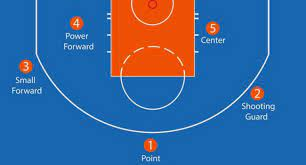
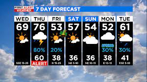
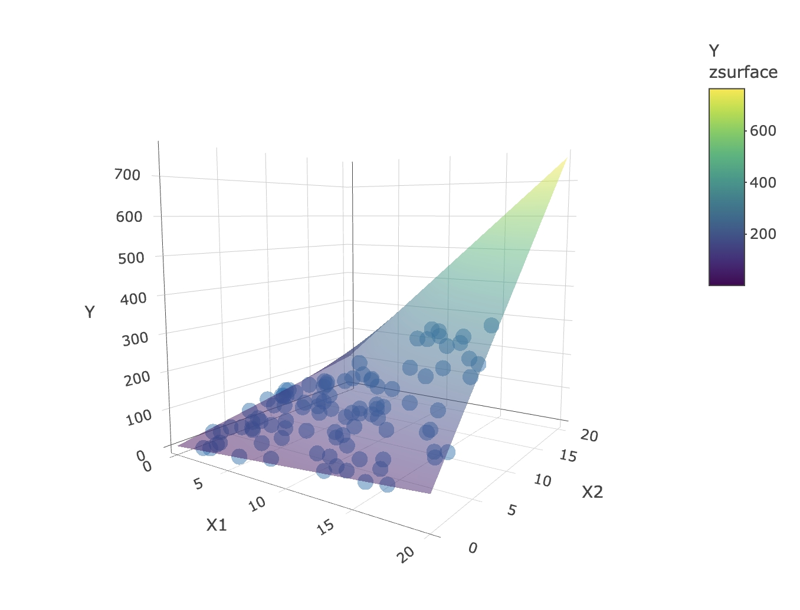

This project involves SQL queries for sales data analysis and employee performance evaluation. Key tasks include adding random sale dates, updating product prices, calculating customer lifetime, categorizing orders, identifying top-selling products, assessing employee performance with a point system, and analyzing high-priced products.
Features: Data Manipulation, Data Aggregation, Conditional Statements, Join Operations, Subqueries, Date Functions, Grouping and Ordering, Views

This project focuses on enhancing the performance of a Random Forest algorithm used for classifying NBA player positions. The dataset used contains various attributes of NBA players, including their positions, which are categorized as guards (G), forwards (F), and centers (C). The goal is to build a classification model that accurately predicts a player's position based on their attributes.
Features: Random Forest, Hyperparameter tuning (ranger and h20), Grid Search
This code represents a data science project focused on predicting Non-HDL cholesterol levels. It begins with data wrangling and variable transformation, followed by exploratory data analysis and correlation assessment. Model selection, diagnostics, and cross-validation are then employed to choose and evaluate predictive models, providing valuable insights into the factors influencing Non-HDL cholesterol levels.
Features: Data Manipulation (dply and tidyverse). EDA, Regression Modeling and Diagnostics, Cross-Validation
This code uses Self Organizing Maps (SOMs) to analyze player performance data from the 2022 MLB season. Baseball, a sport rich in statistics, serves as the backdrop for exploring hidden patterns and clusters within player metrics. The code preprocesses the data, creates a SOM grid, visualizes the data through heatmaps, and performs clustering. It offers insights into player performance and relationships, making it a valuable tool for baseball analytics.
Self Organizing Maps (Kohonen maps), Clustering, Unsupervised Learning

This code snippet showcases a decision tree modeling process for weather prediction using R. It includes loading necessary libraries, data preprocessing, model creation, visualization, and performance evaluation. Importantly, it demonstrates the concept of overfitting, where a more complex model may not necessarily perform better.
Data Preprocessing (dplyr, tidyverse), Model Building (rpart), Visualization (rpart.plot), Performance Evaluation

This project delves into the intricacies of regression analysis, focusing on the effects of interaction terms and multicollinearity. By examining how these factors reshape the regression plane, the project provides insights into the nuanced relationships between predictor variables. Through practical examples, the project equips analysts with a deeper understanding of how to navigate these complexities for more accurate and informed modeling.
Features: ggplot2, plotly, predict3d, GGally
This R script analyzes data related to drug use, drug overdose deaths, and their correlation with socio-economic factors over time. It uses various data manipulation and visualization techniques to explore trends and relationships in the datasets.
Features: Data Wrangling (dplyr, tidyverse) and Visualization (ggplot2)